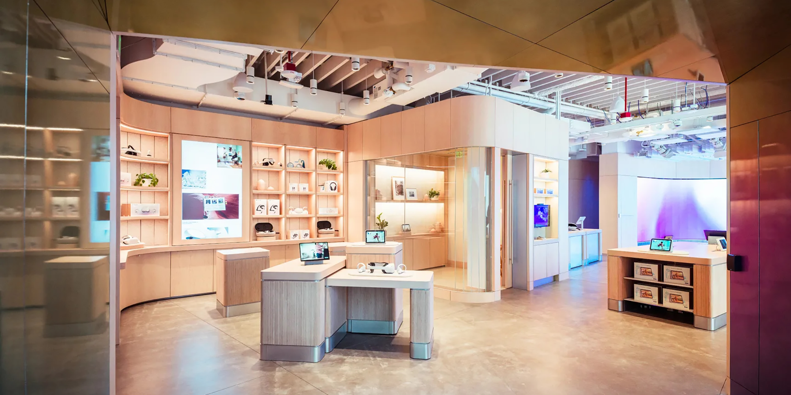
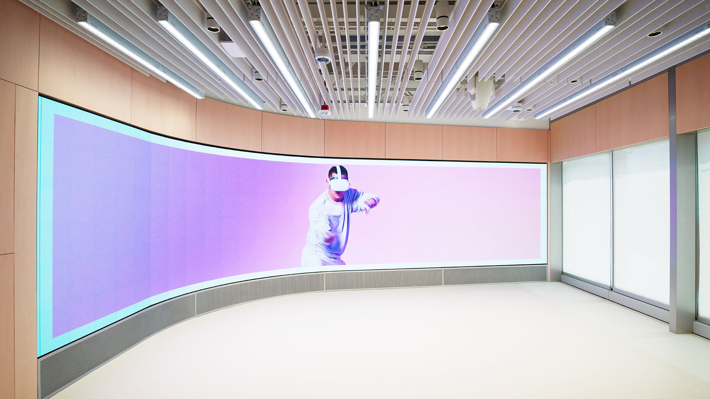
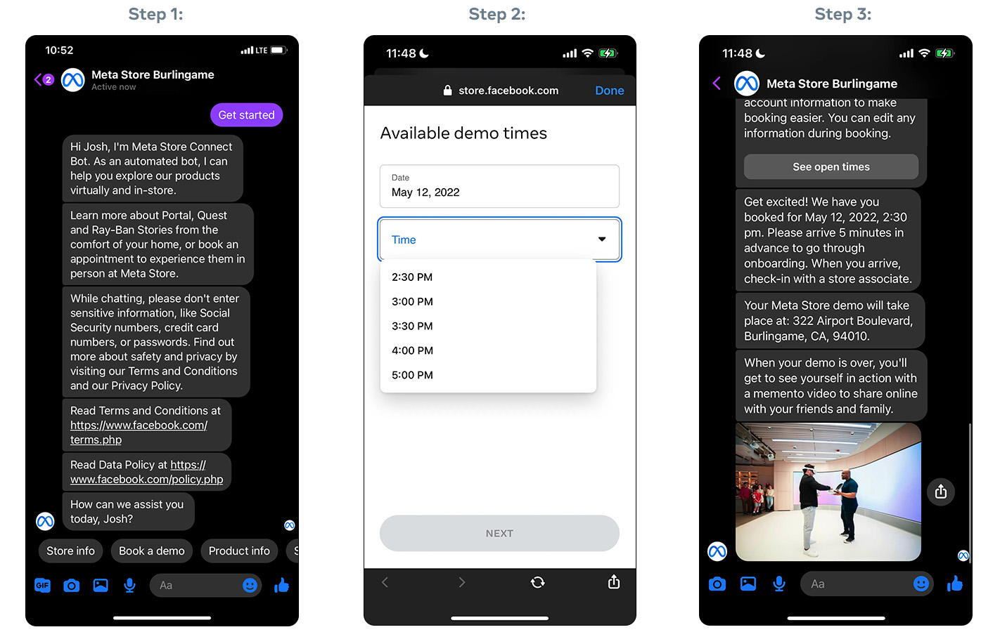
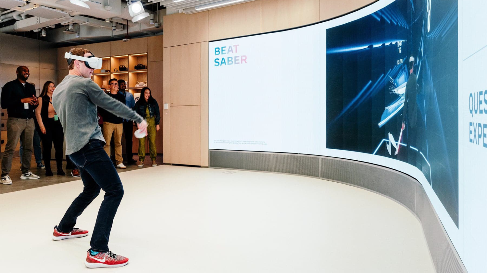

Deeplocal - Meta Store
Published on: 11/20/2025

Introduction
I helped Deeplocal, Meta and a formidable team of vendors bring Meta’s first brick and mortar store to life.
This highly interactive retail experience showcased Meta’s hardware products and the marquee feature was the Meta Quest 2 “mixed-reality” (MR) experience. There were also demo pods for other products, including the Ray-Ban Stories glasses and Meta Portal. These product showcases were networked and powered by the Gumband exhibit control system, giving users a seamless and engaging retail experience.
Showcases
Quest 2 Mixed-Reality

The Meta Quest 2 mixed-reality showcase was the store’s marquee feature and it allowed people inside, outside and online to share in the Quest 2 VR experience.
Meta built a custom scheduling system which allowed guests to use Facebook to schedule a demo prior to their arrival at the store. Upon arrival, an admin would help the guest check-in and start their interactive experience using a custom web application (SPA), which I helped Deeplocal build.1 Guests would then use the SPA select a VR title for their demo and customize their experience (e.g. privacy, accessibility, etc.). They would then be fitted and assigned a Quest 2 headset (associated with their session), experience their demo and receive their takeaway asset – if they’d opted to receive one.

Every step of this flow involved passing data between different vendors’ systems and I was responsible for building the main hub which connected them all. In addition to moving users through the demo experience state machine, it was the system responsible for interfacing with the Facebook scheduling and asset takeaway system; triggering environmental cues via REST, (raw) TCP, SDK or SMB. My system exposed a REST interface to allow for collaboration with the other systems and was built using Flask, Redis and Postgres. It also made extensive and … clever use of Redis’ pub/sub feature in order to allow Python to interface with Gumband2, despite GB not offering a Python SDK (Gumband <=> Node <=> Redis <=> Python).
Vestibule Signage
There was digital signage inside and outside the store which was used to inform guests and passersby about Meta products, scheduled events, etc. We explored various hardware vendors and content management solutions for these signs but wound up using Intel NUCs, the Chrome browser’s kiosk mode and Gumband to manage the content and expose high-level exhibit controls.
I built a Node application which bridged the gap between the content and commands coming from Gumband and the vendor’s SPA. It defined the schema for the various content card used by the SPA and used WebSockets to communicate with it (e.g. ‘new event added to calender’ or ‘update to list of products’). This layer of abstraction worked well for both teams and allowed the SPA devs to work independently, so long as their seed data adhered to the schema.
Environmental Controls / Third-party Comms
As mentioned above, the demo back-end was the clearinghouse for third-party communications and the de facto “show control” system. The demo back-end interfaced with the following systems and we used a common abstraction layer to normalize communications with each of them. Every service got its own Python utility module with a similar interface and series of commands. This layer of abstraction also made opening a Python REPL and manually sending messages during debugging a breeze. Another pleasant side effect of this strategy is that it made mocking/stubbing from within the Flask application’s test suite very straightforward.
Analog Way Picturall
The Picturall was the workhorse responsible for smoothly rendering the mixed-reality content (video and SPA), attract reels and various messaging to the Quest 2 mixed-reality LED wall. The (fantastic!) Analog Way team came up with a series of custom cues which could be triggered by TCP messages. The Python module I wrote hid the complexity of these messages and allowed the Flask application and Gumband commands to easily recall specific Picturall cues while providing dynamic parameters. This all required very close collaboration with the Analog Way team – especially because dedicated dev time with the Picturall hardware in the playtest and store environments was extremely limited.
We were able to use these cues to periodically run Picturall healthchecks from the Gumband dashboard and these healthchecks would immediately alert an admin if there was a connectivity problem.
Gobo
The mixed-reality demo stage had a gobo projector which helped indicate where guests should stand during their demo and signal when the demo was beginning and ending. The projector exposed a REST interface and our Python wrapper module was used by the Flask application and Gumband to allow for triggering and customization of specific gobo cues.
We also used the gobo projector’s REST interface to create a Gumband healthcheck which would notify admins if a connectivity issue was detected.
Mixed-reality Server
The mixed-reality server (which handled the actual video segmentation and compositing) created a recording of demos for guests who wanted a takeaway asset. This recording was then shunted to a shared SMB drive where the demo back-end server would use the MR server’s utility module to check for it upon completion of the demo.
Reservations/takeaways
In a familiar refrain, we also created a Python wrapper for the Facebook-owned reservations and takeaway system. This module allowed for the in-store applications to retrieve a list of reservations and for bookkeeping during/after the guest’s demo. It was also responsible for uploading the guest’s takeaway asset upon completion of their demo. The reservations system would then send the asset to the guest using Messenger upon completion of the guest’s demo.
Lessons Learned/Suspicions Confirmed
E2E Play-testing
We had multiple “playtesting” sessions involving all of the vendors making their services available for true end-to-end testing. Most of these sessions were in-person but we also had a few remote sessions and these all wound up being extremely valuable. This was all during the tail end of the Covid-19 pandemic and congregating was a constant source of concern, frustration and stress.
I created “fake server” scripts (Python’s SimpleHTTPServer to the rescue!) which mimicked the collaborating services and were used by the various teams during their own development but there’s no substitute for true end-to-end testing on production hardware. These sessions were invaluable and saved countless days of work during the final install. These sessions exposed gaps in the UX (e.g. edge cases surrounding environmental controls when MR sessions ended early) and in the intra-service comms (e.g. message structure and data types).
Shared documentation
The vendors agreed early on that we would make a concerted effort to keep our shared documentation up-to-date and add inline notes whenever changes were made explaining the what, why and downstream impacts. This group effort kept the various systems working together and, even though it was just a Google Doc (prior to their addition of code formatting!) it wound up being a critical element of the project’s success.
One related enhancement which we never got around to was using Protocol Buffers or similar as the data exchange mechanism for the collaborating services. This would have smoothed over issues with types, nulls, etc. across the different environments and would have ensured that we had working reference documentation at all times. However, there’s an upfront cost to this approach and this approach can absolutely stall progress – especially when teams are working very quickly and requirements are still WIP.
loguru
When this project started, loguru hadn’t yet emerged as the Python logging library and the demo back-end would have been a lot simpler if we’d either used it from the jump or migrated to it. The stdlib’s logger requires verbose configuration in the simplest of circumstances and that this project’s logging requirements were not. We needed logging to adapt to the environment (e.g. local dev with phony data vs on-prem with PII), anonymize certain fields using custom filters, stream logs to either a local or remote Gumband instance, configure retention, a logging endpoint which other services made use of, etc. We also needed to support various combinations of the above and more. I also used dependency injection to “simplify” the issue of instantiating the Python stdlib logger once and only once and this wound up being pretty klunky.
loguru would have simplified the project’s configuration files and the import/DI hack referenced above and I do regret not calling out the benefits of spending a day or two migrating to it and making it happen. This would have just been polish, though, as once we got our logging configuration into a good place, we didn’t have any issues with it once we got into production.
ngrok
ngrok was an invaluable tool when we needed to securely share access to resources for demos and remote E2E testing. I know Tailscale is all the rage these days but I would absolutely reach for Ngrok again when a similar need for simply, selectively and securely granting access to remote resources arises.
Summary
This project was a complete success. It launched according to the client’s timeline and exceeded stakeholder expectations.
It was by far the most ambitious experiential project I have worked on and it was a metric ton of work to make it happen. However, it was a thrill to see it come together. It would not have been possible without the all of the teams working together in true collaborative fashion and without any gatekeeping. I witnessed lots of people jump in and help other teams without being asked and without expecting anything in return. Sure, it was all in service of a corporate client but the willingness to help others in-the-moment and not just throw hands up was inspiring and something I won’t forget. Shout out to each and every one of you.
I was also brought onto this project by a long-lost childhood friend and it was a great excuse to reconnect. Thanks, Chris!

Resources
- Deeplocal Case Study (archived)
- Engadget
- Gumband
- Hannah Dubrow Case Study
- Meta Tech Blog
- Steven Jos Phan Case Study
- Washington Post
Photo Credits
Update - 11/24/25
- added Mark Zuckerberg photo and minor copy changes
Footnotes
I built a prototype of the demo web application using Elm while dedicated FE devs built a more polished and production-ready version using React. (I also wound up contributing to the React version.) The Elm version was remarkably useful while doing our initial playtesting and helped iron out many UX and usability issues. Thanks to the Elm compiler’s strict nature, the Elm app wound up addressing bugs and edge cases from the jump, which followed the React version into production.↩
At the time, this was the biggest showcase of Gumband and it led to a number of new features from the GB team and even a few bugfixes from me.↩